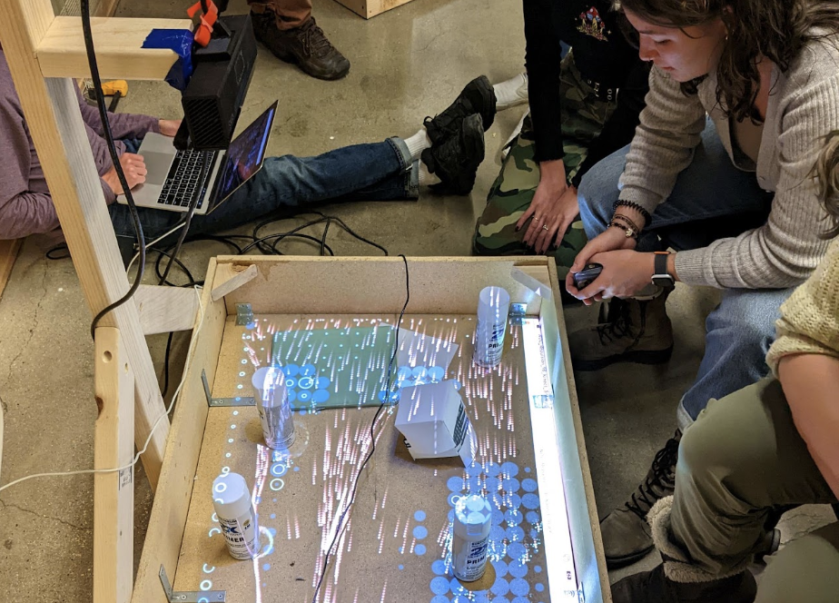

BTU Lab
Blow. Things. Up.
The ATLAS BTU Lab is an inclusive community makerspace facilitating projects at the intersection of Art, Design, Engineering and Architecture. It serves multiple functions as a general workspace and workshop venue.
Who?
Anyone* can gain access to BTU. Our goal is to provide the most diverse, inclusive environment for makers of all types in a highly experimental and productive space.
*Due to increased campus security, we are currently unable to sponsor BuffOne Guest cards.
How?
New members attend a 20 minute general orientation covering community expectations, safety and equipment.
When?
The orientation* schedule, and all scheduled events can be found on the BTU Calendar.
*Some things involve separate orientations...like lasers and stuff. Check the calendar and the pages above for your interests.
Uh..What?
Questions: email BTU Lab at atlasbtulab@gmail.com.
And, finally...Where?
Materials
BTU Lab is not a free supply store. But there are many ways to barter, including displaying your work in BTU, tagging us in social media, offering workshops, volunteering to organize supplies, and more. If you need something, we ask that you give something in return.
Fabricate Anything You Can Imagine


.jpg)